Signs: DirLocal
37 items: Drawn 2, Placeholder 35
 2101Non-primary sign on approaches to junctions (family stand-in)Drawn
2101Non-primary sign on approaches to junctions (family stand-in)Drawn 2102Junction ahead of two non-primary routes, one of which leads to a primary routePlaceholder2103Non-primary sign at the junctionPlaceholder
2102Junction ahead of two non-primary routes, one of which leads to a primary routePlaceholder2103Non-primary sign at the junctionPlaceholder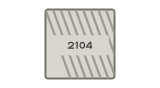
2104Non-primary direction at a roundaboutPlaceholder 2111Non-primary direction to a placePlaceholder
2111Non-primary direction to a placePlaceholder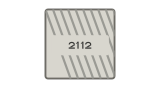
2112Non-primary direction to a facilityPlaceholder 2113Non-primary confirmatory signPlaceholder2114Junction ahead where one lane of a non-primary route is reserved for traffic turning to the rightPlaceholder
2113Non-primary confirmatory signPlaceholder2114Junction ahead where one lane of a non-primary route is reserved for traffic turning to the rightPlaceholder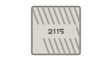
2115Non-primary direction with a primary-route panelPlaceholder 2116Non-primary junction-name signPlaceholder
2116Non-primary junction-name signPlaceholder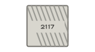
2117Non-primary lane-destination signPlaceholder 2118Non-primary overhead directionPlaceholder
2118Non-primary overhead directionPlaceholder 2120Double mini-roundabout ahead with exits to three non-primary routes, one of which leads to a car ferry and another is an advisory lorry routePlaceholder2121Junction ahead of a non-primary route with another non-primary route leading to a town or village that has been by-passedPlaceholder
2120Double mini-roundabout ahead with exits to three non-primary routes, one of which leads to a car ferry and another is an advisory lorry routePlaceholder2121Junction ahead of a non-primary route with another non-primary route leading to a town or village that has been by-passedPlaceholder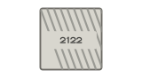
2122Sharp bend in main route at a junction ahead with a minor roadPlaceholder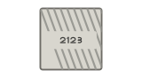
2123Prohibited movement ahead on a non-primary route with an indication of a route avoiding that prohibitionPlaceholder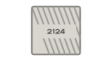
2124Prohibited movement ahead on a non-primary route with an indication of a route avoiding that prohibitionPlaceholder 2125Non-primary ring-road directionPlaceholder
2125Non-primary ring-road directionPlaceholder 2126Non-primary town-centre directionPlaceholder
2126Non-primary town-centre directionPlaceholder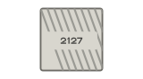
2127Non-primary diversion directionPlaceholder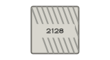
2128Non-primary distance and destinationPlaceholder 2130Non-primary route forming part of a ring roadPlaceholder
2130Non-primary route forming part of a ring roadPlaceholder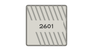
2601Route for pedestriansPlaceholder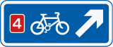
2601.1Direction of a numbered route for pedal cycles forming part of a national cycle route network at a junction aheadPlaceholder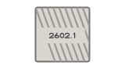
2602.1Cycle direction (variant)Placeholder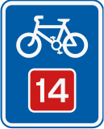
2602.2Numbered route for pedal cycles and electric scooters being used in a trial forming part of a regional (blue number patch) or national (red number patch) cycle route networkPlaceholder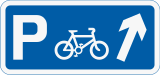
2603Junction ahead leading to a parking place for pedal cyclesPlaceholder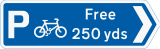
2604Direction and distance to a free parking place for pedal cyclesPlaceholder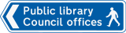
2605Direction to a bridlewayPlaceholder2606Direction to a bywayPlaceholder 2607Direction of route to destination shown for pedestrians (as diagram 2605)Placeholder
2607Direction of route to destination shown for pedestrians (as diagram 2605)Placeholder 2608Direction of route to a tourist attraction for pedestriansPlaceholder
2608Direction of route to a tourist attraction for pedestriansPlaceholder 2609Direction of route for pedestrians to a parking place associated with a tourist attractionPlaceholder2610Direction to or along a public footpathPlaceholder
2609Direction of route for pedestrians to a parking place associated with a tourist attractionPlaceholder2610Direction to or along a public footpathPlaceholder 2610.1Direction to or along a public footpath (as diagram 2610)Placeholder
2610.1Direction to or along a public footpath (as diagram 2610)Placeholder 2610.2Direction along a public right of way, concessionary path or permissive path indicated by waymarksPlaceholderSTREET_NAMEStreet-name plateDrawn
2610.2Direction along a public right of way, concessionary path or permissive path indicated by waymarksPlaceholderSTREET_NAMEStreet-name plateDrawnFaces marked from GOV.UK: traffic sign images © Crown copyright (Department for Transport), Open Government Licence v3.0; converted from the EPS.